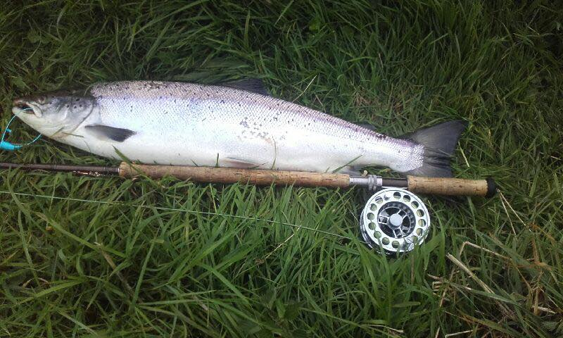
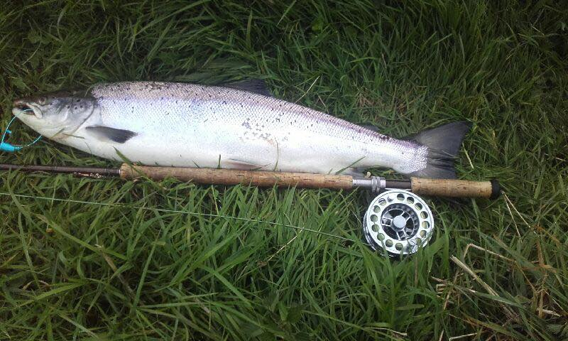
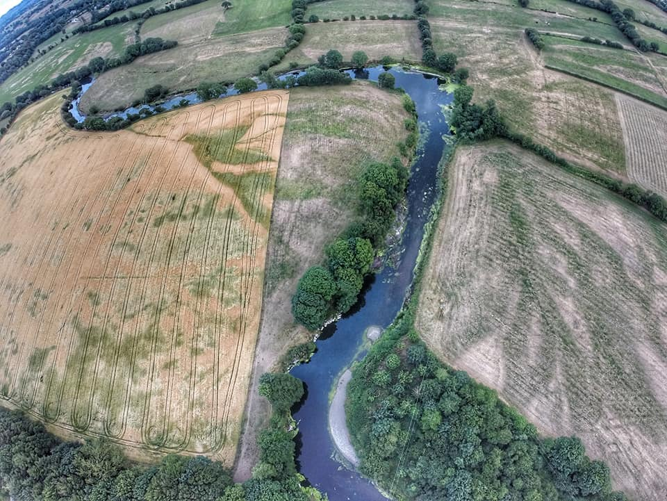
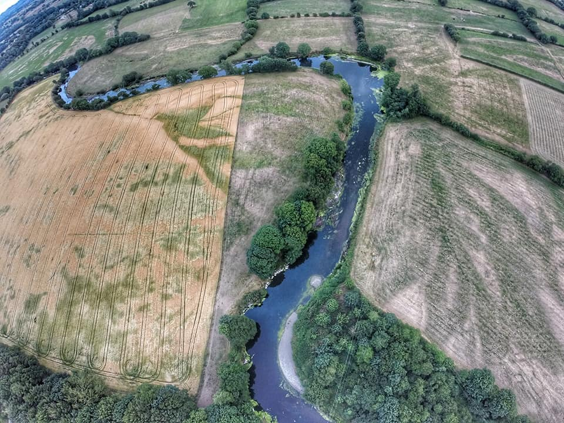

Welcome to Bandon Angling
Bandon Angling Association would like to welcome you to our exciting new website.
Extra features have been added to enhance your experience, ease navigation and ensure
all the latest news is at your fingertips.
Please take a moment to like our Facebook page
here to ensure you
are up to date with all of the latest news.
Tight lines to all!
Recent Updates
Club Newsletter 2017
2017-02-17
2017 Newsletter
It’s time to dust down the rods and get our gear together as the start of the 2017 fishing season is upon us. 2016 was a relatively dry year but when a rise in water levels materialised, very good fishing was had by many. Spring fishing was encouraging with better numbers of fresh salmon met in March/April. Angling gained momentum in May with the cream of sport enjoyed in June/July. However, from mid-August onwards, the run of fresh salmon dwindled and this observation was echoed by many in Ireland and the UK. Certainly, a consequence of changes in the marine environment. With regards to sea trout, fishing
could only be described as sporadic. Text book conditions were prevalent, alas consistent fishing was in short supply. Brown trout fishing was quite difficult, however some enjoyed excellent fishing when they were in the right place, at the right time with the right flies.
Fishing will continue on as normal, with opening day on February 15th. Our opening day meet is in the Munster Arms Hotel, Bandon, where refreshments will be served from 5.30pm. As always, we remind anglers to record all salmon and sea trout over 40cm in their logbooks whether they are retained or released, including salmon kelts, baggots and rawners. Also, make sure logbooks are returned by October 19th so accurate figures are collated by Inland Fisheries Ireland (IFI). The total allowable catch (TAC) for the Bandon has increased for 2017 as anglers have recorded their catches and returned logbooks in an efficient manner. Please continue to do so. Anglers are still permitted to retain 10 salmon/sea trout over 40cm.
The dates set for payment of club permits are the 8th and 9th of February from 7.00 pm to 9.30 pm in the Munster Arms Hotel. Season permit prices for the upcoming season remain the same at €150 and an option for online payment will soon be available at bandonangling.com. We would advise all members prompt payment of subs and for administration purposes, we expect payment no later than Friday April 7th. As usual, when receiving your permit you will also obtain a tag for your jacket/hat. This is a visual aid to help fishery officers, water keepers and anglers alike to identify whether someone should be fishing or not. We must stress this is not a licence and you must still carry your permit.
Weekend patrolling by club members was conducted in a very successful manner with cases of poaching declining over the summer. Remember, it is your river and your sport which you are protecting. We sincerely thank you for your efforts. If you suspect a non-member is fishing, do not approach them and contact the Club Mobile or Fisheries Officers instantly.
Bandon Angling Association has secured funding from IFI to carry out more enhancement work at Deasy’s Turn to further protect river banks from erosion. It is hoped this work will be carried out over a 4 day period this coming summer. Furthermore, plans have been set out for spawning stream enhancement work which will be extremely beneficial to our population of trout in particular. Access wise, a new galvanised steel footbridge has been installed in the south bank of Longfields. We also hope to install more footbridges and stiles.
Water quality on the Bandon was very good overall last year. Catchment-wide monitoring of pollution sensitive macroinvertebrates has shown further improvement. However, our river continues to come under pressure from a multitude of different factors. Several incidents were reported last year and dealt with accordingly. Club members are asked to be observant and report anything suspicious to our Environmental Officer. The Bandon Watermain and Sewerage Upgrade will be put out to tender in the first quarter of 2017. Planning permission is due for submission as a new waste water treatment plant for Innishannon is in the offing. The Bandon Flood Relief Scheme will re-commence in May this year. Disruption to our member’s fishing will ensue, however its implementation will provide great relief to the people of Bandon.
Finally, after 45 years of dedicated service to the club, Michael O’Regan has chosen to step down as Honorary Treasurer of our club. He has given so much over this time and has helped mould it into the thriving club we enjoy today. We pledge our sincere thanks to Michael and wish him all the best for the future. His son, Fergal O’Regan, is the newly elected Honorary Treasurer and we know he will do him proud.
Officers and Committee for 2017
President; Dick Lee. Vice President; Don Carey. Chairman; Robert Smith. Vice Chairman; Sylvester Cotter. H/Treasurer; Fergal O’Regan. A/Treasurer; David McCann H/Secretary; Jason Nash. A/Secretary; Shane Deane. Youth Officer; Fergal O’Regan. A/Youth Officer; Ian Walker. Environmental Officer; Jason Nash. Development Officer; Barrie O’Mahony. P.R Officer; David Forde.
Committee
Dan O’Connell, David Forde, Denis Fahey, Mansfield Wagner, Tim O’Brien, Don Ring, Anthony Buckley, Brian Warren, Shane Deane, Phil Dewey, Trevor O’Mahony, Ian Walker, Michael Waugh, Robert Beare, Michael O’Regan and Noel Scanlon.
Water Keepers
Anthony Buckley; 087-2500282
Barrie O'Mahony; 087-2336405
Fergal O’Regan; 086-3724358
Ian Walker; 087-6752585
Michael Coughlan; 087-6592075
Phil Dewey; 086-2509593
Robert Smith; 086-3871173
Shane Deane; 087-7535152
Terry Payne; 086-0262566
Website: www.bandonangling.com
Email: info@bandonangling.com
Club Mobile: 086-3724358
Dermot Long - Fisheries Officer: 087-4199870
Environmental Officer: 085-1167865/ jason@bandonangling.com
Secretary’s Address: Shippool, Innishannon, Co. Cork.
Tight Lines!
Jason Nash,
Honorary Secretary.
Think Conservation, Enjoy the Bandon River.


 

 



Visitors
Guiding Service Information
Bandon Angling Association (BAA) have officially launched a guiding service for the 2016 season. Our qualified guides will offer you a professional service along eight miles of double bank fishing on West Cork’s beautiful Bandon River. Whether you’re hoping for the dainty sip of a brown trout, the electric slam of a sea trout or the unmistakable draw of a salmon, we can offer you our experience so you get the best out of your day on the river.
Read MorePricing
1 person: €80 half day/ €150 full day
2 people: €100 half day/ €180 full day
We aim to give you the best possible day out on the river. Our service will be tailored to meet all your specific needs. Please book in advance to avoid disappointment! Max 2 people per guide. If a group consists of more than 2 people, an extra guide is required at full price to ensure quality of service. Family packages can be arranged. Under 18’s must be accompanied by a parent. A half day is considered to be 4 hours long and a full day is 8 hours long. Times can be arranged upon booking. All guides are certified in First Aid and fully insured. All tackle provided if necessary. Club permit and state license are not included (prices of these are on our Visitors page). If booking a date in advance, a 50% deposit is required. If the river is out of order, an alternative location may be arranged or date changed.
Email: jason@bandonangling.com

Contact Information
Phone: 086 3724358
Email: jason@bandonangling.com